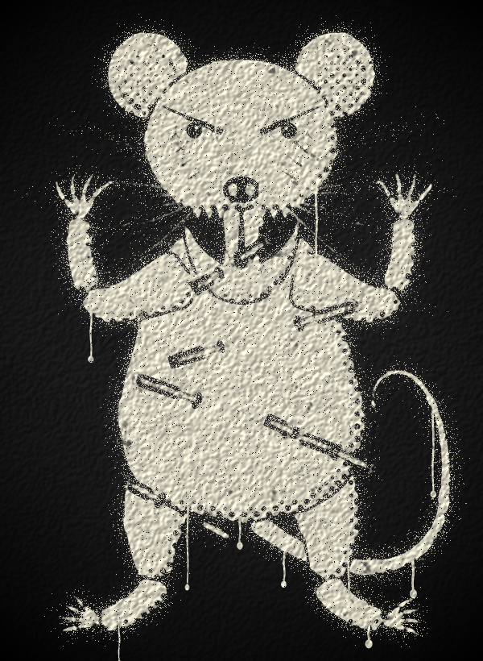
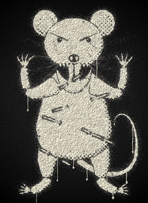
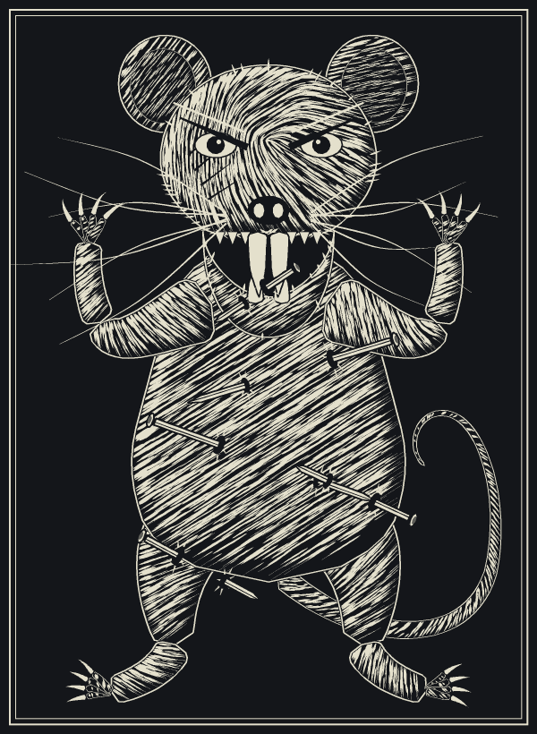
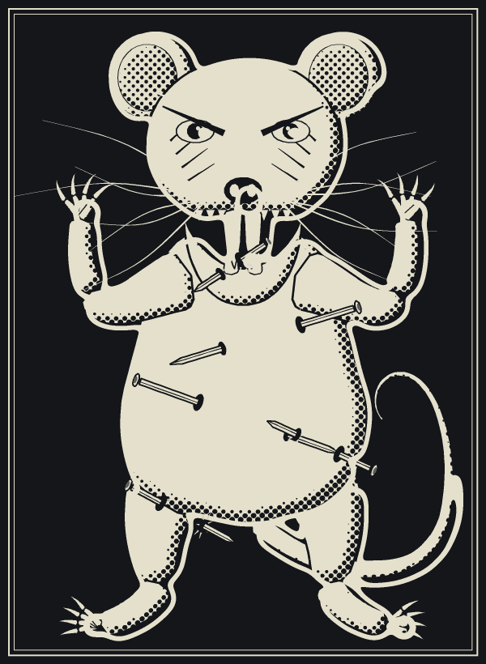
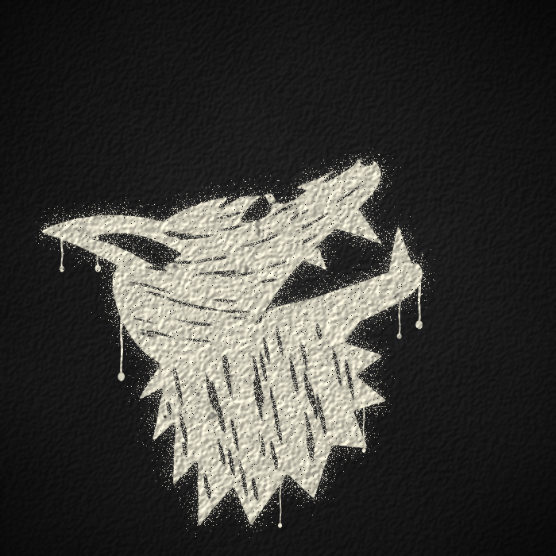
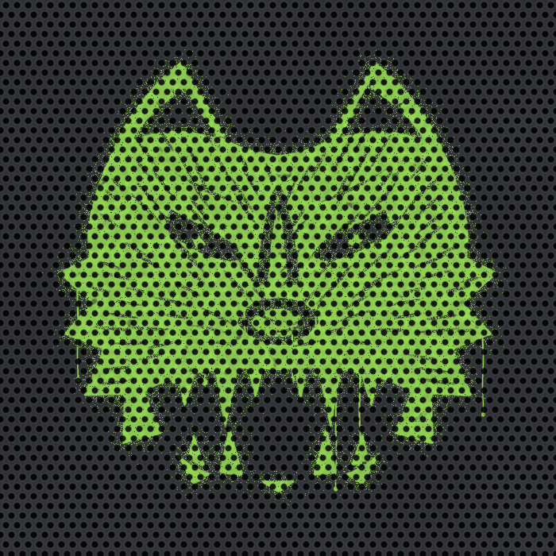
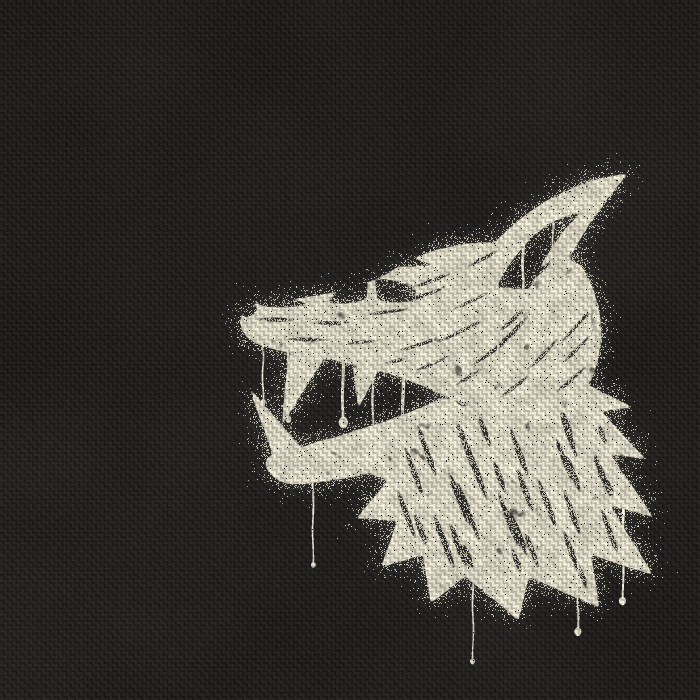

Flat sketches to pick a style before any production render. VERMIN is a snarling rat with iron nails driven through it, in three styles. The cab wolf is a spray stencil in three takes. Pick one of each, or mix (for example "V3 style, W2 wolf"), by leaving a comment.
Read these as style tests, not final art. They're procedural drawings. The rats come out more cartoon mouse than vicious rat: round ears, an upright body, a soft face. The wolf muzzles are crude. What each sheet does show is how the style looks on the pedal face and the cab, and whether it still reads at small size.
Whichever style you pick, the production art should be hand-drawn vector art or a commissioned illustration in that style. The pose, the nails and the stencil treatment carry over from here.


at 300 pxSame stencil language as the wolves, so the pedal and the cab read as one set. Bridges, overspray and drips. The nails get muddy.

Hatching and fur strokes. This is the weakest of the three as drawn here: rough rather than engraved. A real engraving would need an illustrator.

Solid bone shapes, halftone shading and an offset keyline. It's the crispest and the most legible at small size.

A howl pose. The weakest of the three: the ear and the muzzle compete.

The boldest of the three and it reads at a glance. The grille holes act as a halftone. With its pointed ears and broad face it reads more cat or fox than wolf; the silhouette needs redrawing.

Clearly a snarling wolf, with drips and wear on woven cloth.